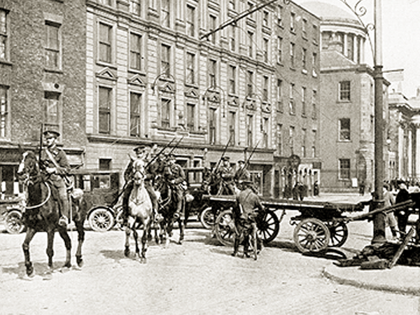

To the east of Smithfield, and less than one mile from the GPO, North King Street is today a densely-populated urban area, also close to the Four Courts.
As the Rising came to a bloody end, between the Friday evening and Saturday morning, soldiers of the South Staffordshire Regiment killed more than a dozen innocent people around this area as they tried to take the Four Courts. Ned Daly was the Volunteer commander in the area.
